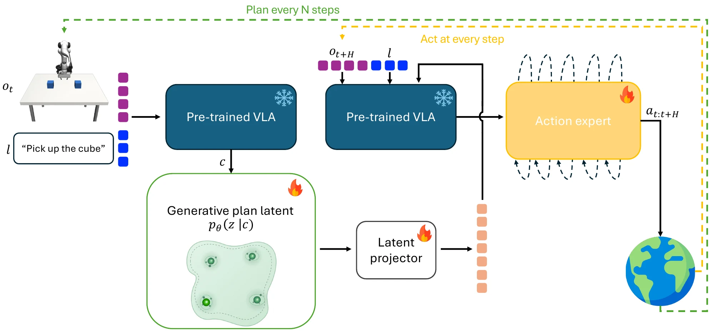

Change the robot's mind, not its weights.
Generative Plan Latents for Vision–Language–Action Models
TODO: Affiliations
Same scene. Same words. Two plans.
GPL gives a VLA a distribution over plans instead of a single one. That unlocks three things at deployment, none of which touch the network's weights.
of 8-plan draws on real-robot scenes hold both strategies, pick and push. A deterministic twin: never.
Steerof rollouts do what you asked, up from 48%. Guiding π0's actions instead: no gain.
Adaptof training to match retraining the planner on the same feedback, which costs 1013.
Two identical cubes, and the instruction names neither. Either cube is fine. A planner with one output either aims between them or always takes the same one. GPL keeps both.
Averages the two valid plans and lands between the cubes.
invalidPicks a valid plan. Always the same one.
valid · stuckFlows noise into plans. Every draw lands on a cube, and both cubes stay open.
valid · both openDraw again and you get a different plan that still works. Each line below is one drawn grasp, flowing from noise to a decision on the scene image.
Same start, two draws: one takes the left cube, the other the right, and both lift it. Right: a deterministic plan aims at the gap between the cubes and grasps nothing.
of held-out layouts where 16 draws cover both valid grasps. Regression: every draw invalid. Winner-take-all: always the same grasp.
of 8-plan draws on real-robot scenes that hold both pick and push, against a deterministic twin trained on the same demos.
| invalid draw ↓ | covers all ↑ | steering effect ↑ | can rerank ↑ | |
|---|---|---|---|---|
| regression (MSE) | 1.00 | 0.00 | 0.00 | 0.00 |
| winner-take-all | 0.03 | 0.00 | 0.00 | 0.50 |
| GPL (flow) | 0.14 | 1.00 | +0.31 | 1.00 |
Grasp-angle task: a square object admits two top-down grasps 90° apart; regression averages them into a diagonal grasp that misses. Eight held-out layouts, five seeds, K = 16 draws. Sim clips: soft-token executor on a frozen ECoT-7B backbone. Real arm: draws are scored offline on all 85 start images of the first robot session, not executed; the deterministic twin gives push on 80 images, pick on 1, and no valid plan on 4.
A small classifier bends the plan flow toward the request: which object, which grasp, which way. Change the request and nothing gets retrained.
Real SO-101 arm, same start, two requests. Lift the roll into the square, or hook it and slide it there. The robot did what was asked in 13 of 13 runs.
Guidance on the plan climbs to 0.94. The same guidance on π0's native action chunk shows no reliable gain over its unguided level and falls at high doses: the decision is explicit in plan space, but smeared across a 128-D action chunk.
Asked in words for the right cube, the arm goes left. Asked through the plan, it takes the right cube. When words and plan disagree, it follows the plan, in all 240 conflict rollouts.
steering effect with a plan vs with words, same executor: how much the outcome moves when you flip the request.
grasp rate of the word-commanded arm vs the plan-commanded one. Words grasp fine; they just don't decide what gets grasped.
Steering effect (steer range) = rate of the requested target minus the rate when the opposite target is requested. Plan-vs-action: each arm has its own matched executor; GPL keeps its plan adapter, the action arm is a dedicated no-plan adapter trained at the same budget and guided through π0's 128-D action chunk; n = 96 episodes per dose, 95% cluster-bootstrap intervals. Plan-vs-words: soft-token action head on a frozen ECoT-7B backbone, three adapter seeds, 40 held-out configurations. Real arm: π0.5 fine-tuned together with the plan projector on our SO-101 demonstrations (unlike simulation, where the VLA is frozen and a LoRA is trained); each run executes the reasoner's first draw in the requested manner with plan guidance w = 2; 11 of the 13 runs ended in the square; clips at 2× speed.
Deployment throws things at a robot that training never showed it. GPL already holds the alternatives, so it only has to find out which one works now: it scores its own outcomes and re-weights the plans it draws. The network never changes.
A wider can topples when the fingers come down to pick it. Pushing still works. The robot doesn't need a new skill, only a different plan.
Every card is an experiment we ran. One mechanism handles all of them.
In the demonstrations both manners work.
Runs at 2×, later runs at 4×.
Always-pick is the best fixed choice, but only if you know the shift in advance. GPL gets there from outcomes alone.
Each row is one sequence of eight runs starting from an empty per-mode reward table (β = 20, executor plan guidance w = 2); after each run the planner sees only success or failure. Earlier pilot sequences on the lying roll, with an older motion controller and other settings, are not shown. A fourth lying-roll sequence, set up with the roll rotated 90°, stayed on pick; in that set-up picking was not disabled (4 of its 8 runs succeeded, three of them by pushing). Bars: the always-push, no-feedback, and always-pick rows come from a baseline session on the same day; pick and push rows pool fixed template plans, reasoner draws in that mode, and the no-feedback draws by the mode they executed. Adaptation counts runs 2–8 of the four raised sequences, without the run the operator touched. Adaptation over no-feedback draws: +0.32 (95% CI −0.01 to +0.60; Fisher p = 0.07; 27 vs 10 runs).
Two cubes, one secretly unreliable. Re-weighting frozen plan draws reaches the same success as retraining the planner on the same feedback, with 388× less compute for the critic and none at all for the reward table.
Three objects, any order is valid, some orders are shorter. A critic fit on the robot's own rollouts moves the draws to the short ones within three rounds. Shuffled feedback goes nowhere.
Success before and after re-weighting one shared reasoner's draws by measured outcomes. In three of the four tasks the broken option changes from scene to scene, so the robot must learn which plan works here, not one global preference.
We tried, with π0 matched in scenes, capacity, and critic. It doesn't reduce cost, and more samples widen the gap. Action noise gives you variations of one strategy, not new strategies.
Retraining comparison: two-cube task with hidden, unequal success rates and binary outcomes; final success 0.845 (reward table, 0 FLOPs), 0.841 (critic, 2.6 × 1010), 0.841 (Continued-BC) and 0.836 (AWR), both 1.0 × 1013, starting from 0.514; equal within a strict equivalence margin; 10 seeds. Path-length task: 5 seeds, mean ± s.d., 20 test scenes; the deterministic plan sits at 10.4 ± 1.6%; a single deterministic plan cannot be re-ranked. Four tasks: one 54-D contact-sketch reasoner trained jointly on all four SimplerEnv families; success is that of a scripted controller executing the chosen mode in the shifted scene; the deterministic twin reaches 0.62, 0.38, 0.00, and 0.67. Adapted plans re-weight frozen draws by \(p_\theta(z\mid c)\,e^{\beta s(c,z)}\); the generator and the VLA are never updated.
The right cube fails 10% of the time. Each deployment draws one of 16 frozen plans and records success or failure. Draws are re-weighted by \(e^{\beta\,\hat s}\); dot size is the weight.
A one-dimensional toy of the mechanism, not data from the paper: the paths are the exact rectified-flow ODE for a two-mode plan distribution.
If the scene already settles what to do, a plan is dead weight. If the scene leaves the choice open, or hides what matters, the plan carries the decision. We can measure which case you are in, and we tested it three ways.
The spoon is masked from the camera mid-task. Stock π0 (left) leaves it on the table; carrying the plan made before it vanished (right), the spoon ends on the towel.
grasp success over stock π0 when the target disappears from view, and +28 over a matched plan-less control. When nothing is hidden, the arms converge.
With one valid choice the plan is a bottleneck (−0.23); with two it wins big (+0.79). On LIBERO, swapping habit demos for counterfactual pairs (either bowl, same scene) strips what the scene gives away, and steering rises in lockstep as redundancy falls (Spearman ρ = −1.00).
Redundancy \(\widetilde R = 1 - H(y\mid c)/\ln m\): \(H(y\mid c)\) is the held-out cross-entropy of a probe predicting the decision \(y\) from the executor's conditioning \(c\), \(m\) the number of modes; 0 means the scene says nothing about the decision, 1 that it settles it. Ambiguity: U = 1 − |2β − 1| with β the share of demonstrations on the preferred cube; scene and executor fixed; 95% t-intervals over five training seeds. Occlusion: the target's visual mesh is hidden from control step t onward; carrying the earlier plan also beats re-inferring it from the degraded image at every step. LIBERO: five nested demonstration mixtures, six tasks, 360 episodes per arm, scene-clustered 95% bootstraps; this sweep has its own protocol, and on the ten-task set the pooled oracle steering effect rises from +0.19 to +0.65 while \(\widetilde R\) drops from 0.47 to 0.00, all six matched adapter seeds favouring the counterfactual set. Generic instructions are needed so the words don't name the bowl; π0 collapses under them (3/300), π0.5 stays competent (140/300).
The VLA reads the scene and the instruction. A rectified-flow head draws a plan from that context, and eight soft tokens hand it to the action expert. Sampling, steering, and adapting all act on this one distribution.

Rectified flow from noise to plan. A draw is a few Euler steps, about 80× cheaper than sampling one reasoning chain.
A light noise-aware classifier tilts the flow toward the request \(y\). \(w=0\) is the untouched prior.
A score \(s\) from a reward table or small critic, fit on deployment outcomes, re-weights frozen draws.
Same start, two plans: one sends the arm to the left cube, the other to the right cube; each is grasped.
One 54-D sketch of contact events (position, approach angle, gripper state), one reasoner, four SimplerEnv task families. Rollouts through π0 with contact-sketch LoRAs: a generalist for which-object and sweep (reasoner plans), specialists for grasp and pick-or-push (oracle plans).
rate of doing what was asked, through π0, with a 2-D plan learned from behavior alone. As good as the hand-designed plan (difference +0.03, not significant); ceiling 0.92.
π0 follows both commanded plans, and re-ranking lifts plan-level success from 0.65 to 1.00 (offline probe, fixed plan anchors).
success once feedback reveals a hidden forbidden route; shuffled feedback lags. Draws cover both routes, and guidance picks either one.
Benchmarks rarely contain the open decisions this work is about, so we built most of the multimodal tasks ourselves. When the scene already settles the decision, the plan adds nothing, and the plan interface can cost grasp success (−0.27 on LIBERO). The robot study is one task with two manners on one low-cost arm. The paper lists every limitation.
Vision–Language–Action (VLA) policies increasingly reason before acting, but existing reasoning models compress this intermediate decision into a single representation. When several plans are valid, this commitment hides alternatives that could otherwise be selected or revised. We introduce the Generative Plan Latent (GPL), which represents the reasoning state as a low-dimensional conditional distribution over plans, such as which object, grasp, or route to use. This makes the reasoning state addressable: without retraining the VLA, plans can be sampled (coverage), selected on request (steering), and reweighted by deployment outcomes (outcome adaptation). We test all three on SimplerEnv manipulation with π0, and extend the analysis to RoboCasa, LIBERO, and a maze domain. Steering the plan raises the fraction of executions that follow the request from 0.48 to 0.94, while the same guidance on the native action distribution shows no reliable gain. Finally, we show that an explicit plan is most useful when it carries decision information not already determined by the observation.
@article{gpl2026,
title = {Reasoning as a Distribution: Generative Plan Latents
for Vision--Language--Action Models},
author = {TODO},
journal = {arXiv preprint arXiv:TODO},
year = {2026}
}